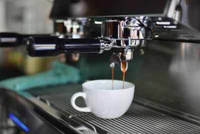
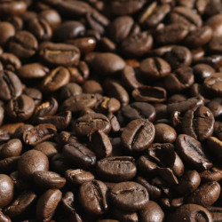

Style Coffe
A Style Coffee nasceu do desejo de transformar a experiência do café em algo único, moderno e cheio de estilo. Fundada em 2023, somos uma cafeteria jovem e descolada que combina paixão por café, criatividade e um ambiente acolhedor para todos os amantes da bebida. Aqui, acreditamos que o café vai além do simples ato de tomar uma xícara. Ele conecta pessoas, inspira conversas e cria momentos inesquecíveis. Por isso, escolhemos os melhores grãos, trabalhamos com torrefação artesanal e elaboramos cada receita com um toque especial para surpreender seu paladar.Nosso espaço foi pensado para quem busca uma vibe descontraída e autêntica. Seja para uma reunião de trabalho, um encontro entre amigos ou um momento de pausa na rotina, a Style Coffee é o lugar perfeito para se sentir em casa e, ao mesmo tempo, conectado com o mundo. ☕.
Na Style Coffee, cada xícara de café conta uma história de cuidado e dedicação. Nossa seleção de grãos é um processo rigoroso que começa com os melhores produtores, escolhidos por sua tradição e compromisso com a qualidade. Trabalhamos diretamente com fazendas que cultivam grãos especiais em altitudes elevadas, onde o clima e o solo garantem características únicas de sabor e aroma. Os grãos são colhidos manualmente no ponto ideal de maturação, garantindo que apenas os melhores sejam utilizados. Após a colheita, passam por um processo de torrefação artesanal, ajustado para realçar suas notas naturais e entregar um café equilibrado e marcante.
